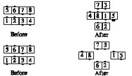

From parallel waves or lines: Centers Hinge, and the resulting ends Roll; new very centers Trade and Roll, as the original ends Circulate 1-1/2 and those who line up behind the centers turn 1/4 to face down the line; then the center four, six, or eight finish a Tag through the middle; the first dancer Peel Left, second dancer Peel Right to finish as couples on the outside facing in; the others, if any, stay in the center.
